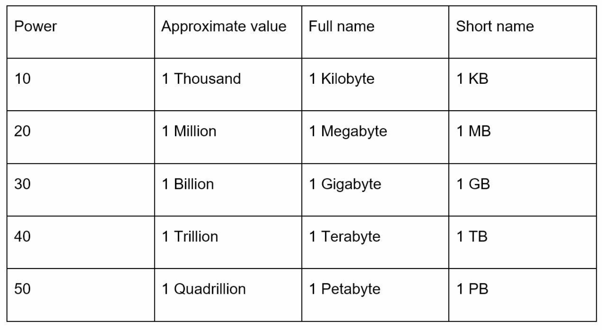

第 2 章：粗略估算
原章节：Back-of-the-Envelope Estimation · 原项目路径
02. Back Of the Envelope Estimation/
本章导读
面试官说："设计一个短链服务。"你刚在白板上画了一个方框，他就追问："这个系统每天要写多少条记录？五年要多少存储？需要几台机器？"
如果你答不上来，后面所有的架构讨论都会变成空谈——因为你根本不知道自己在设计一个"一台笔记本就能跑"的系统，还是一个"需要几百台机器"的系统。
这一章讲的就是这种能力：用纸笔和心算，在 60 秒内估出一个系统的量级。它不追求精确，追求的是"不犯数量级错误"。
学完这章，你应该能回答：为什么程序员要背一堆"延迟数字"？1 天到底算 86400 秒还是 10 万秒？为什么说"缓存命中率从 99% 掉到 90%"意味着数据库压力涨了 10 倍？
你将学到
- 用二的幂快速换算存储量级（KB / MB / GB / TB / PB）
- 一套现代版的"延迟数字"，以及为什么要记量级而不是精确值
- 可用性用"几个 9"表示时的含义，以及它的两个常见陷阱
- 完整走一遍 Twitter 的 QPS 与存储估算，并逐个验算原笔记的算术
- 幂等近似（1 天 ≈ 10^5 秒）等心算技巧，以及峰值系数的取法
- 一套可复用的估算工作流：从 QPS 推到带宽、缓存和机器数量
1. 量级估算为什么重要
「粗略估算（Back-of-the-Envelope Estimation）」这个名字来自一个很形象的说法：在信封背面随手算几笔，就能判断一个想法靠不靠谱。
它的价值有三个层次：
- 判断可行性。 有人跟你说"我们把全量数据放内存里吧"，你算一下：100 亿条记录 × 每条 1 KB = 10 TB。一台机器的内存装不下，这个方案直接出局。
- 暴露瓶颈在哪。 算出"写 QPS 是 3.5 万，读 QPS 是 350 万"，你立刻知道读路径才是设计重点。
- 在面试中展示工程直觉。 面试官不关心你算出的数字是 3472 还是 3500，他关心的是：你知不知道要算、假设合不合理、结论有没有指导设计。
一个必须记住的心态 估算的目的是定方向，不是给答案。算出"每天 30 TB"之后，正确的反应是"所以我们必须把媒体文件放对象存储（Object Storage），而不是塞进数据库"——而不是纠结到底是 30 TB 还是 31.5 TB。
原笔记把这一章分为三部分：关键概念（二的幂、延迟数字、可用性数字）、一个完整实例（Twitter）、以及估算技巧。下面按这个顺序展开。
2. 二的幂与数据量级
计算机的存储单位是二的幂。你不需要记住 2^30 的精确值，但必须能在"字节数"和"人类可读的单位"之间来回换算。

| 单位 | 二的幂 | 近似十进制 | 直观记法 |
|---|---|---|---|
| 1 KB（Kilobyte） | 2^10 = 1,024 | 约 1 千 | 一段短文本 |
| 1 MB（Megabyte） | 2^20 = 1,048,576 | 约 100 万 | 一张压缩后的照片 |
| 1 GB（Gigabyte） | 2^30 | 约 10 亿 | 一部标清电影 |
| 1 TB（Terabyte） | 2^40 | 约 1 万亿 | 一块消费级 SSD |
| 1 PB（Petabyte） | 2^50 | 约 1000 万亿 | 一个中型数据中心的存储量 |
这张表的用法：当你算出"1.2 × 10^11 字节"时，要能立刻反应出这是 120 GB。技巧是把指数除以 3：10^11 的指数是 11，11 / 3 ≈ 3.67，所以量级在 GB（10^9）和 TB（10^12）之间，更靠近 GB——事实上 10^11 = 100 × 10^9，也就是 100 GB。
这里有个坑：KB 还是 KiB？ 严格来说，
2^10应该叫 KiB（Kibibyte），而 KB（Kilobyte） 在 SI 标准里是 1000 字节。硬盘厂商用的是十进制（1 TB = 10^12 字节），操作系统显示的是二进制（所以标称 1 TB 的硬盘在系统里只显示约 931 GB）。 在估算时不需要较真，但要知道这个差异存在——不然你算出的 55 PB 和运维给的数字对不上时，会白白浪费时间找 bug。
3. 延迟数字：每个程序员都该记住的量级
这是本章最重要、也是原笔记问题最大的一节。
面试中经常出现这样的对话：
面试官："如果每个请求要读 100 个 key，你打算怎么设计？" 你："每个 key 读一次磁盘，100 次就是 100 次磁盘寻道。" 面试官："那要多久？"
答不上来，就说明你对"磁盘慢"只有模糊的感性认识，没有量化的判断力。而量化判断力恰恰决定了你能不能做出正确的架构决策。
原笔记给出的表格
原笔记列出的是一张标题为"Latency (2020)"的表格：L1 缓存 0.5 ns、L2 缓存 7 ns、主内存 100 ns、SSD 随机读 150 µs、HDD 随机寻道 10 ms、机房内往返 500 µs、跨区域数据中心 150 ms。
这张表的问题在下一节的【勘误 1】里详细说明：它标注的年份是 2020，但数值其实是 Jeff Dean 在 2010 年前后整理的那一版，其中 SSD 部分已经明显过时。
现代量级参考（2020 年代）
重要声明：下表的数字是量级参考，不是精确值。同一项操作在不同硬件上可能差 2~5 倍，具体取决于 CPU 型号、内存代数、SSD 是 SATA 还是 NVMe、网络是 1 Gbps 还是 100 Gbps。你要记住的是数量级和相对倍数，不是小数点后的数字。
| 操作 | 现代量级 | 相对主内存的倍数 |
|---|---|---|
| L1 缓存访问 | ~1 ns | 0.01× |
| L2 缓存访问 | ~4–10 ns | 0.05× |
| 互斥锁加锁/解锁 | ~20 ns | 0.2× |
| 主内存（DRAM）随机访问 | ~80–120 ns | 1×（基准） |
| 用 Snappy/Zippy 压缩 1 KB | ~2 µs | 20× |
| 通过 1 Gbps 网络发送 1 KB | ~10 µs | 100× |
| NVMe SSD 随机读 4 KB | ~20–100 µs | 200–1000× |
| 从 NVMe SSD 顺序读 1 MB | ~0.2–1 ms | 2000–10000× |
| 同机房网络往返（RTT） | ~0.1–0.5 ms | 1000–5000× |
| HDD 随机寻道 | ~5–10 ms | 50000–100000× |
| 从 HDD 顺序读 1 MB | ~5–20 ms | 50000–200000× |
| 跨地域网络往返（同洲不同区） | ~30–80 ms | — |
| 跨洲网络往返 | ~100–200 ms | — |
从这张表里应该读出什么
第一，内存和磁盘之间有两个数量级的鸿沟。
内存 ~100 ns，NVMe SSD ~50 µs，中间差 500 倍；SSD 到 HDD 又差 100 倍。这解释了为什么缓存这么有效——一次内存访问换掉一次磁盘访问，收益是几百倍。
第二，网络往返比一次本地 SSD 读还要贵。
同机房 RTT 约 0.1–0.5 ms，而一次 NVMe 随机读约 20–100 µs。也就是说，为了省一次网络往返去本地读一次 NVMe，往往是划算的。这是现代架构里"边缘缓存""本地盘优先"这类设计的量化依据。
第三，跨洲延迟有物理下限，任何代码优化都绕不过去。
光在光纤中的传播速度约为 200 km/ms（真空中的 2/3）。一次跨 10,000 公里的往返，光本身就要走 20,000 公里，耗时至少 20000 / 200 = 100 ms。这就是为什么 CDN 和就近接入不是"锦上添花"，而是唯一解——你不能让光跑得更快，只能让内容离用户更近。
第四，顺序访问比随机访问快得多。
同样是读 1 MB，NVMe 顺序读只要 0.2–1 ms，而 HDD 随机寻道一次就要 5–10 ms。这解释了为什么 Kafka 用顺序追加写日志能跑到极高的吞吐量，也解释了为什么 LSM-Tree（RocksDB、LevelDB 的底层结构）要把随机写变成顺序写。
为什么要记量级，而不是精确数字
初学者常问："我为什么不直接查表？"
因为在真实的设计讨论中，你需要的是不假思索的直觉。当你在白板上画架构时，没有时间去查"NVMe 的 4K 随机读延迟是多少微秒"。你需要的是脑子里有一个大概的刻度尺：
- 这个东西是"纳秒级"的（CPU 缓存）
- 还是"百纳秒级"的（内存）
- 还是"百微秒级"的（SSD、同机房网络）
- 还是"毫秒级"的（HDD、跨地域网络）
只要刻度对，你就能判断"这个操作能不能放进用户请求的关键路径里"。量级对了，结论就对了；量级错了，小数点后精确到十位也没用。
记忆锚点 以内存为基准：SSD 慢 500 倍，HDD 慢 10 万倍，同机房网络往返慢 2000 倍，跨洲网络往返慢 100 万倍。
4. 可用性数字：从两个 9 到六个 9
「高可用（High Availability, HA）」的目标是让服务尽量不停机。业界习惯用"几个 9"来表示可用性：
| 可用性 | 别称 | 每年停机时间 | 每月停机时间 |
|---|---|---|---|
| 99% | 两个 9（Two Nines） | 约 3.65 天 | 约 7.2 小时 |
| 99.9% | 三个 9（Three Nines） | 约 8.8 小时 | 约 43.2 分钟 |
| 99.99% | 四个 9（Four Nines） | 约 52 分钟 | 约 4.3 分钟 |
| 99.999% | 五个 9（Five Nines） | 约 5.3 分钟 | 约 26 秒 |
| 99.9999% | 六个 9（Six Nines） | 约 31.5 秒 | 约 2.6 秒 |
原笔记列出了前五档的每年停机时间，数值全部正确（我在【勘误与补充】里逐个验算过）。这里额外补上"每月停机时间"一列，因为线上故障通常是按月复盘（月度 SLO）的。
云厂商（Amazon、Google、Microsoft）的 SLA（服务等级协议） 一般承诺 99.9% 或更高。
别把 SLA 和实际可用性混为一谈 SLA 是"承诺的下限"，不是"实际水平"。云厂商敢承诺 99.9%，是因为它实际跑得比这好得多——承诺越低，赔付风险越小。 反过来，作为用户你要注意：SLA 是赔付条款，不是技术指标。它写 99.9%，不代表你拿到的就是 99.9%；也不代表 99.9% 就够用——一个月停 43 分钟，对金融交易系统是不可接受的。
两个必须知道的陷阱
陷阱一：多个组件串联时，可用性是相乘的，不是取最小值。
假设一个请求要依次经过网关、服务 A、服务 B、数据库，每个组件的可用性都是 99.9%：
0.999 × 0.999 × 0.999 × 0.999 ≈ 0.996 = 99.6%
每多一个串联环节，整体可用性就往下掉一档。 四个 99.9% 的组件串起来，只相当于 99.6%——每月多停 17 分钟。
这解释了一个反直觉的现象：微服务拆分得越细，端到端可用性越差。所以拆服务时要用超时、重试、熔断、降级来"截断"依赖链，而不是让故障沿着调用链一路传导。
陷阱二：99.9% 到 99.99% 不是"提升 0.09%"，而是"停机时间砍到十分之一"。
从 8.8 小时降到 52 分钟，意味着你要做到自动化故障转移（人工介入根本来不及）、多副本、灰度发布、完善的监控告警。这是数量级的工程投入差异。面试时如果能说出"每提升一个 9，成本和复杂度都要上一个大台阶"，是加分项。
5. 实战：Twitter 的 QPS 与存储估算
现在把前面的工具用起来。原笔记用 Twitter 举了一个完整例子，我们先照原样走一遍，然后逐个验算。
假设（Assumptions）
| 项 | 值 |
|---|---|
| 月活跃用户（MAU） | 3 亿 |
| 日活跃用户占比（DAU） | 50% |
| 人均每天发推数 | 2 条 |
| 含媒体的推文占比 | 10% |
| 数据保留时长 | 5 年 |
为什么假设要写下来？ 因为估算的结论完全依赖于假设。把假设写在白板上，面试官看到"DAU 占比 50%"可能会说"这个太高了，Twitter 的 DAU/MAU 大概是 20%"。这时候你就能顺着他的话调整——估算过程本身就是一个和面试官对齐认知的机会。
估算一：QPS
第 1 步，算 DAU：
DAU = 3 亿 × 50% = 1.5 亿
第 2 步，算每秒推文数（写 QPS）：
推文 QPS = 1.5 亿 × 2 条 / 86400 秒
= 3 亿 / 86400
≈ 3472 条/秒
≈ 3500 条/秒
第 3 步，算峰值 QPS：
峰值 QPS = 2 × 3500 = 7000 条/秒
验算结论：原笔记这三步的算术全部正确。 3 亿 / 86400 = 3472.2，四舍五入到 3500 是合理的量级简化；峰值取 2 倍也是原书的假设。这部分可以放心使用。
估算二：媒体存储
第 1 步，算每天新增的媒体文件数：
每天推文数 = 1.5 亿 × 2 = 3 亿条
其中含媒体的 = 3 亿 × 10% = 3000 万条
第 2 步，算每天的媒体存储量（每条媒体按 1 MB 算）：
每日媒体存储 = 3000 万 × 1 MB = 30,000,000 MB = 30 TB
第 3 步，算 5 年总量：
5 年存储 = 30 TB × 365 天 × 5 年
= 30 TB × 1825
= 54,750 TB
≈ 55 PB
验算结论：原笔记这两步的算术同样正确。 30 TB × 365 × 5 = 54,750 TB = 54.75 PB，约等于 55 PB，没问题。
但这里有三个"假设层面"的问题
算术没错，不代表估算完整。有三点原笔记没有交代清楚：
问题一：只算了"写"，没算"读"。
原笔记算出的 3500 QPS 是发推的速度。但 Twitter 的真实负载里，读（刷时间线）比写高出两到三个数量级。
粗算一下：如果每个活跃用户每天刷 50 次时间线，每次拉 20 条推文：
读 QPS = 1.5 亿 × 50 / 86400 ≈ 86,800 次/秒（时间线请求）
= 8.7 万 QPS
也就是说，读写比大约是 25 : 1。这个结论会直接改变设计：写路径只要 2 台服务器就够，读路径才是需要缓存、CDN、读扩散（Fan-out）优化的地方。
面试中的正确姿势：算完写 QPS 后主动补一句"接下来算读 QPS，因为读通常远大于写，而它才是真正的瓶颈"。这一句话就能体现你懂系统。
问题二：tweet_id 和 text 的字节数被列出来了，却完全没参与计算。
原笔记在"Tweet Size Components"下列了 tweet_id: 64 bytes、text: 140 bytes、media: 1 MB，但后面的计算只用了 media。
这本身不算错（因为媒体占了 99.99% 以上），但读者容易误以为要相加。我们把它补算完整：
每天的文本+元数据 = 3 亿条 × (64 + 140) 字节
= 3 亿 × 204 字节
≈ 61 GB/天
5 年总计 ≈ 61 GB × 1825 ≈ 111 TB
111 TB 对比 55 PB，占比约 0.2%——确实可以忽略。但你在面试中主动说出"文本元数据约 111 TB，可以忽略不计"，比直接忽略它要有说服力得多。
问题三：140 bytes 是一个已经过时的数字。
Twitter 的单条推文字符上限早在 2017 年 11 月就从 140 提高到了 280。而且"140 字节"和"140 字符"是两回事——一旦涉及中文、日文或 emoji，一个字符要占 3~4 个字节。详见【勘误 2】。
从估算到设计决策
估算的价值在于导出结论。把上面的数字整理一下：
| 估算项 | 结果 | 导出的设计决策 |
|---|---|---|
| 写 QPS | 约 3500（峰值 7000） | 写路径压力小，单库 + 主副本复制足够 |
| 读 QPS | 约 8.7 万 | 读路径必须加缓存；时间线要预计算 |
| 每天媒体增量 | 30 TB | 媒体必须放对象存储（S3 类），不能进数据库 |
| 5 年媒体总量 | 约 55 PB | 需要冷热分层，老数据下沉到廉价存储 |
| 媒体带宽 | 约 2.8 Gbps（峰值 5.6 Gbps） | 必须上 CDN，否则源站带宽成本爆炸 |
带宽怎么算的？
平均带宽 = 30 TB/天 × 8 bit/字节 / 86400 秒
= 30 × 10^12 × 8 / 86400
≈ 2.78 × 10^9 bit/s
≈ 2.8 Gbps
峰值带宽 = 2.8 × 2 ≈ 5.6 Gbps
这才是估算的终点：不是一串数字，而是一组"所以我们必须这样做"的决策。
6. 高效估算的四个技巧
原笔记给了四条技巧，都很实用，这里逐条展开。
技巧一：取整与近似（Rounding and Approximation）
精确度不重要，过程才重要。 把复杂计算简化成好算的数字。
原笔记的例子：
99987 / 9.1 ≈ 100,000 / 10 = 10,000
真实的商是 10,987。误差约 9%——但对于量级判断完全够用。
这里要补上最重要的一条近似技巧：1 天 ≈ 10^5 秒。
真实值是 86,400 秒，取 10^5 会让结果偏低约 13.6%。但它的好处是指数对齐，心算瞬间完成：
| 场景 | 用 86400 算 | 用 10^5 算 |
|---|---|---|
| 3 亿条推文/天 → QPS | 300,000,000 / 86400 ≈ 3472 | 300,000,000 / 100,000 = 3000 |
| 10 亿请求/天 → QPS | ≈ 11,574 | = 10,000 |
为什么这点误差可以接受？ 因为你的假设（"DAU 占比 50%""人均 2 条"）本身就有 2~3 倍的误差。在假设误差有 300% 的情况下，纠结分母是 86400 还是 100000 完全没有意义。
配套记住这几条换算，几乎覆盖所有面试题：
| 时间单位 | 秒数 | 心算近似 |
|---|---|---|
| 1 天 | 86,400 | 10^5 |
| 1 个月 | 2,592,000 | 2.5 × 10^6 |
| 1 年 | 31,536,000 | 3 × 10^7（更精确地说约 π × 10^7，误差 0.4%） |
一年约等于 π × 10^7 秒，这是一个流传很广的小技巧，记住它能让你在算"每年多少请求"时快很多。
技巧二：写下你的假设（Write Down Assumptions）
把假设写在白板上，有两个作用：一是你自己不会算着算着忘掉前提；二是面试官可以随时纠正你——让他纠正你，比让他默默给你扣分好得多。
一个好的假设清单长这样：
【假设】
- MAU 3 亿，DAU/MAU = 50% → DAU 1.5 亿
- 人均每天发 2 条
- 10% 的推文含媒体，平均 1 MB
- 数据保留 5 年
- 峰值系数取 2（早晚高峰）
技巧三：标注单位（Label Units）
写 5 MB，不要写 5。
原因很实际：估算过程中你要做单位换算（字节 → KB → MB → GB → TB），一旦某一步漏标单位，很容易出现"把 GB 当成 TB"这类数量级错误，而这种错误在面试里是致命的——它会让你得出"需要 5 万台机器"这种荒谬结论。
建议在纸上用斜杠表示换算链：
3 亿条/天 × 200 字节/条 = 6 × 10^10 字节/天
= 60 GB/天
= 0.06 TB/天
技巧四：熟悉常见的估算场景
原笔记列了五类：QPS、峰值 QPS、存储需求、缓存需求、服务器数量。
但原笔记只列了名字，没给算法。这里补上每一项的具体算法。
| 估算项 | 计算公式 | 备注 |
|---|---|---|
| QPS | 日请求数 / 86400 | 用 10^5 心算 |
| 峰值 QPS | 平均 QPS × 峰值系数（2~5） | 社交类取 2~3，电商大促取 5~10 |
| 存储 | 日增量 × 保留天数 | 别忘了算副本数（通常 ×3） |
| 缓存内存 | 热点对象数 × 单对象大小 | 一般取全量的 10%~20% 作为热点集 |
| 带宽 | 日流量 × 8 / 86400 | 单位是 bit/s，注意 8 倍换算 |
| 服务器数 | 峰值 QPS / 单机容量 | 单机容量要打 50% 余量 |
峰值系数怎么取？ 这是初学者最容易拍脑袋的地方。经验值：
- 全球性社交产品（Twitter、微博）：2~3（用户分布在不同时区，天然削峰）
- 面向单一市场的电商：5~10（晚 8 点的秒杀可以把平均流量拉高一个数量级）
- 企业办公系统：2~5（工作日白天集中）
7. 补充：一套可复用的估算工作流
原笔记给的是"知识点清单"，这里把它串成一套可以照着做的流程。面试中遇到任何"估算一下"的问题，按这五步走。
第 1 步：明确要估算什么
不是所有题都要算全套。先问自己：这个系统最稀缺的资源是什么？
- 短链服务 → 存储 + 读 QPS
- 视频网站 → 存储 + 带宽
- 聊天系统 → 连接数 + 消息投递 QPS
- 排行榜 → 内存 + 写 QPS
第 2 步：列出假设，并标注数量级
DAU = 10^8
人均日请求 = 10
单条记录大小 = 1 KB
第 3 步：自上而下推导
日请求数 = 10^8 × 10 = 10^9
QPS = 10^9 / 10^5 = 10^4（1 万 QPS）
峰值 QPS = 10^4 × 3 = 3 × 10^4
第 4 步：推导衍生指标
日新增存储 = 10^9 × 1 KB = 10^12 字节 = 1 TB/天
5 年存储 = 1 TB × 1825 ≈ 1.8 PB
含 3 副本 = 5.4 PB
第 5 步：导出设计结论
3 万 QPS → 需要负载均衡 + 多台无状态服务
1.8 PB → 单库不可能，必须分片 + 对象存储
5.4 PB → 存储成本是主要成本项，需要冷热分层
完整的例子：估算缓存内存
假设要给上面这个系统做缓存，缓存最近 7 天的热点数据，热点比例 20%：
7 天数据量 = 1 TB/天 × 7 = 7 TB
热点 20% = 1.4 TB
按 2 副本 = 2.8 TB
单机 64 GB 内存，可用 70% ≈ 45 GB
需要机器数 = 2.8 TB / 45 GB ≈ 2800 GB / 45 GB ≈ 63 台
这个数字才是面试官想听到的——"需要大约 60 台缓存机器"，而不是"缓存能加速读取"。
勘误与补充
本节逐条指出原笔记中不准确、过时或缺失的地方。原笔记在算术上没有错误，问题集中在数据过时和假设交代不清。
勘误 1：延迟数字表标注为 2020 年，但数值是 2010 年前后的数据
- 原文说法：表格标题为
Latency (2020)，其中SSD Random Read为 150 µs，L1 Cache Access为 0.5 ns，L2 Cache Access为 7 ns。 - 问题：这组数字来自 Jeff Dean 在 2010 年前后整理的著名表格 "Latency Numbers Every Programmer Should Know"，不是 2020 年的测量值。其中最过时的是 SSD 一项：150 µs 是 SATA 时代 SSD 的水平，今天的 NVMe SSD 随机读 4 KB 大约只要 20~100 µs，快了 2~7 倍。把它标成 2020 年，会让人误以为这是当代硬件水平。
- 正确说法：使用现代量级（见第 3 节的表格）。具体变化：
- L1 缓存：0.5 ns → 约 1 ns（数值接近，量级不变）
- L2 缓存：7 ns → 约 4~10 ns（基本不变）
- 主内存：100 ns → 约 80~120 ns（二十年来几乎没变，因为 DRAM 延迟受物理限制）
- SSD 随机读：150 µs → 20~100 µs（NVMe），这是变化最大的一项
- HDD 随机寻道：10 ms → 约 5~10 ms（机械结构决定，基本不变）
- 同机房 RTT：500 µs → 约 100~500 µs（略有改善）
- 跨区域 RTT：150 ms → 约 30~200 ms，强依赖物理距离，不是一个固定值
- 延伸：这项勘误最重要的不是"背新数字"，而是理解相对关系变了。
- 内存与 SSD 的差距从约 1500 倍缩小到约 500 倍——SSD 相对变快了。
- SSD 与同机房网络往返的差距从约 3 倍扩大到约 6 倍——网络相对变贵了。
- 结论：在"读本地 NVMe"和"发一次网络请求"之间做选择时，现代硬件下本地读往往更划算。这个判断在 2010 年是反过来的。
- 最稳妥的做法是查阅 Colin Scott 维护的交互式延迟数字页面，它会随年代更新。
勘误 2：text: 140 bytes 是过时且单位混淆的写法
- 原文说法：Tweet Size Components 中列出
text: 140 bytes。 - 问题：两处不对。
- 数字过时：Twitter 的单条推文字符上限在 2017 年 11 月已从 140 提高到 280。用 140 做假设，会让文本存储量被低估一半。
- 单位混淆：
140是字符数，不是字节数。纯 ASCII 下 1 字符 = 1 字节，但推文允许 Unicode——一个中文字符在 UTF-8 下占 3 字节，一个 emoji 可能占 4 字节甚至更多（含变体选择符）。把字符数直接写成字节数，在非英文场景下会低估 3~4 倍。
- 正确说法：应写成"单条推文文本上限 280 个字符，按 UTF-8 编码估算，纯英文约 280 字节，含中日韩文字则可能达到 840 字节以上"。做量级估算时统一按 1 KB/条 留余量最省事。
- 延伸：这类"字符 vs 字节"的混淆在估算里非常常见，另一个典型例子是"用户名字段 20 字节"——如果是中文昵称，20 个字符要 60 字节。凡是涉及用户输入的文本字段，都要显式说明按什么编码估算。
勘误 3：QPS 只算了写入路径，遗漏了读路径
- 原文说法：Estimations 中只计算了 Tweets QPS = 3500，Peak QPS = 7000。
- 问题：这两个数字只是发推的写入 QPS，没有估算读取（刷时间线）的 QPS。而社交产品的读取量通常比写入高出两到三个数量级。只拿着 3500 这个数字去设计系统，会得出"这个系统很轻"的错误结论，进而漏掉缓存、CDN、读扩散等真正的设计重点。
- 正确说法：必须同时估算读 QPS。按"1.5 亿 DAU × 每人每天刷 50 次时间线"估算，读 QPS 约 8.7 万，读写比约 25 : 1。设计的重心应该放在读路径上。
- 延伸：这是一个通用规律——绝大多数互联网系统都是读多写少（典型读写比 10:1 到 100:1）。面试时算完写 QPS 后主动追问"读呢"，是一个很好的加分动作。
补充 1：可用性数字一节的验算结果
原笔记给出的五档停机时间全部正确，这里给出验算过程供你核对：
| 可用性 | 验算 | 原文值 | 是否正确 |
|---|---|---|---|
| 99% | 0.01 × 365 = 3.65 天 |
约 3.65 天 | 正确 |
| 99.9% | 0.001 × 365 × 24 = 8.76 小时 |
约 8.8 小时 | 正确 |
| 99.99% | 0.0001 × 365 × 24 × 60 = 52.56 分钟 |
约 52 分钟 | 正确 |
| 99.999% | 0.00001 × 525600 = 5.256 分钟 |
约 5.3 分钟 | 正确 |
| 99.9999% | 0.000001 × 31,536,000 = 31.536 秒 |
约 31.56 秒 | 正确 |
这一节没有需要纠正的地方，我补充的只有两点：月度停机时间的换算（见第 4 节表格），以及"串联可用性相乘"这个原笔记完全没提、但在架构设计中极其重要的规律。
补充 2：幂等近似——为什么用 10^5 而不是 86400
原笔记的"取整与近似"技巧只举了 99987 / 9.1 一个例子，没有给出估算场景中最常用的那条近似。详见第 6 节技巧一。核心逻辑是：假设本身的误差远大于 86400 → 100000 带来的 13.6% 误差，所以取整是净收益。
补充 3：峰值系数怎么取
原笔记直接写 Peak QPS = 2 × 3500，没有解释这个 2 从哪来。详见第 6 节技巧四的表格。峰值系数取值不当是估算中最容易出错的地方——电商大促场景取 2 会严重低估，导致容量规划失败。
补充 4：十进制与二进制存储单位
原笔记没有区分 TB（10^12）和 TiB（2^40）。详见第 2 节的说明。这在估算时不影响结论，但会导致"你算的数字"和"运维看到的数字"对不上。
补充 5：从估算导出设计结论
原笔记止步于数字，没有走完最后一步。详见第 5 节末尾的"从估算到设计决策"表格。面试中，把数字翻译成决策的能力，比算数字本身更被看重。
补充 6：可复用的估算工作流
原笔记列了五个估算场景但没有给算法。详见第 7 节的完整流程和缓存内存估算实例。
常见误区
| 误区 | 为什么错 | 正确理解 |
|---|---|---|
| 估算要算得尽量准 | 假设本身就有 2~3 倍误差，分母再精确也没有意义 | 估算追求数量级正确。1 天用 10^5 秒，不要纠结 86400 |
| 直接背延迟数字的绝对值 | 硬件迭代快，绝对值几年就过时 | 背量级和相对倍数（内存 100 ns，SSD 慢 500 倍，HDD 慢 10 万倍） |
| "磁盘很慢，所以尽量别用磁盘" | NVMe 时代 SSD 已经比一次网络往返还快 | 要看是哪种磁盘。NVMe 随机读 20~100 µs，比同机房 RTT 还短 |
| QPS 就是系统负载 | 只算写 QPS 会严重低估负载 | 必须区分读 QPS 和写 QPS，通常读是写的 10~100 倍 |
| 可用性取最差的那个组件 | 串联依赖的可用性是相乘的 | 4 个 99.9% 串联只有 99.6%。要用超时/熔断截断依赖链 |
| SLA 99.9% 说明服务只停 8.8 小时 | SLA 是赔付承诺的下限，不是实际水平 | 云厂商实际可用性通常远高于 SLA；SLA 是商务条款，不是技术指标 |
| 存 55 PB 数据就买 55 PB 硬盘 | 忘了副本、索引、预留空间 | 实际要乘 3（三副本）甚至更多，还要留 20% 余量 |
| 存储单位 KB 就是 1000 字节 | SI 标准下 KB=1000，二进制下 KiB=1024 | 估算时不必较真，但要知道差异存在，否则对账时会困惑 |
面试速记
-
一句话概括：粗略估算是在 60 秒内用纸笔判断一个系统"有多大规模、瓶颈在哪"的能力，它的产物不是精确数字，而是一组设计决策。
-
必答要点：
- 先写假设再计算，并把假设念给面试官听，让他有机会纠正。
- 1 天 ≈ 10^5 秒，心算秒出 QPS。
- 读 QPS 通常远大于写 QPS，两个都要算。
- 存储要算日增量 × 保留天数 × 副本数，不要漏掉副本。
- 最后一定要把数字翻译成结论（"所以媒体必须放对象存储"）。
-
加分项：
- 主动说出延迟数字的相对倍数而不是绝对值，并指出内存到 SSD 的差距在现代硬件下已经缩小。
- 主动提到串联可用性相乘，以及微服务拆分会降低端到端可用性。
- 主动指出跨洲延迟有光速的物理下限（约 200 km/ms），所以 CDN 是唯一解。
- 区分 TB（10^12）和 TiB（2^40），说明为什么你的估算和运维的数字会有差异。
-
高频追问：
- "你的估算误差有多大？结论还成立吗？" → 假设层面可能有 2~3 倍误差。但我关心的是数量级：无论是 30 TB/天还是 60 TB/天，结论都是"必须用对象存储 + CDN"，不会变。只有当一个结论在误差范围内可能翻转时，才需要更精确的计算。
- "为什么用 10^5 秒而不是 86400？" → 因为假设误差远大于这 13.6%。而且 10^5 让除法退化成"小数点移位"，在面试的紧张环境下更不容易出错。
- "如果峰值系数取 5 而不是 2 呢？" → 峰值 QPS 从 7000 变成 17500，机器数翻 2.5 倍，但架构方案不变。系数影响的是容量，不是架构。 如果业务是电商秒杀类，我会取 5~10 并配合队列削峰。
- "缓存该配多大内存？" → 取热点数据集（通常全量的 10%~20%）× 单对象大小 × 副本数，再除以单机可用内存。详见第 7 节的完整推导。
延伸阅读
- ByteByteGo 系统设计面试课程 — 原笔记的来源
- Latency Numbers Every Programmer Should Know（交互式，随年代更新） — 取代 Jeff Dean 旧表的现代版本，强烈建议收藏
- Jeff Dean: "Latency Numbers Every Programmer Should Know" 原始版本 — 了解这组数字的历史来源
- Google SRE Book：Service Level Objectives — 讲清 SLI、SLO、SLA 三者的区别，比"几个 9"更完整
- AWS 计算器 — 把估算结果换算成真实成本，理解"每个数量级都是钱"